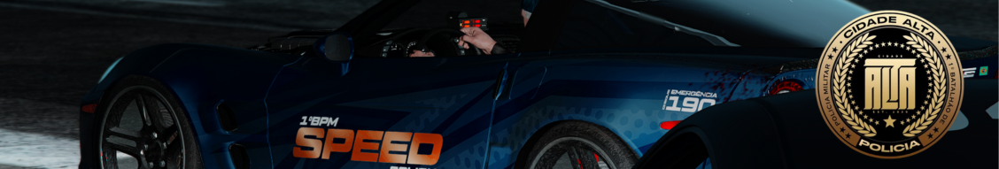

MANUAL DE BOOSTING
Boosting é uma ocorrência de roubo a veículo organizado, classificada em ranks de D a S+. A viatura que iniciar o acompanhamento deve estar no mesmo rank do veículo roubado.
Ao iniciar o Boosting, ocorre uma troca de tiros entre os meliantes e os americanos. A polícia não deve interferir nesse momento.
 FORMAÇÃO DA QRU
FORMAÇÃO DA QRU
Composição base: 3 unidades no veículo principal do acompanhamento.
Veículos de apoio dos meliantes: Máximo de 3 veículos simultâneos, podendo haver troca por decisão dos mesmos.
Limite máximo da QRU: 9 unidades policiais + GRA bônus (somente nos ranks S e S+).
GRA: Liberada apenas em Boostings S ou S+, tanto no apoio quanto no principal.
GTM: Não participa de Boosting.
VIATURAS DE APOIO
▪ Em veículos de apoio S ou S+: 2 unidades
▪ Em veículos de apoio D, C, B, A e A+: 1 unidade
A viatura de apoio deverá atuar exclusivamente sobre os veículos de apoio dos meliantes, não podendo aplicar P.I.T ou BOX no veículo principal.
Somente as 3 unidades iniciais estão autorizadas a aplicar manobras no veículo principal.
APLICAÇÃO de P.I.T / BOX
▪ S & S+: Liberado após o término do tracker.
▪ D ao A+: Liberado após o término do tracker e confirmação de veículos de apoio.
Se houver interferência dos veículos de apoio antes do término do tracker, o P.I.T estará liberado de forma imediata.
Velocidade limite: 180km/h
Caso o meliante aplique P.I.T acima dessa velocidade, a força poderá ser igualada.
Caso haja colisão frontal contra a viatura, a manobra será liberada sem limite de velocidade.
1. Verbalize
2. Sem resposta: P.I.T liberado
▪ Confirmado veículo de apoio → Uso de kit e abastecimento autorizado
REPARO & DESCAPOTAMENTO
▪ Permitido desvirar viatura com /desvirar
▪ Se o meliante sair do veículo para conserto → Cabeçada e algemamento
▪ Se for visto abastecimento/reparo do principal → Verbalizar 3x
Persistindo → Taser liberado
▪ Resgate do veículo principal por apoio (S+, S e A+)
USO DA SPIKE (SPEED)
▪ Segundo resgate (A, B, C e D)
▪ Bate-bate desgovernado
▪ Interferência externa
SITUAÇÃO DE DISPARO
▪ Se houver disparos contra a guarnição → Prioridade máxima
▪ Indivíduos atiradores: Neutralização
▪ Não-atiradores: Disparos no pneu (GRA tem prioridade)
Código penal:
▪ Com disparo: Velozes e Furiosos + Tentativa de Homicídio
▪ Sem disparo: Velozes e Furiosos
▪ Organização é essencial
▪ Nunca responder erro com erro
▪ Conduta imprópria → Escalonar força com:
- Aumento de velocidade no P.I.T
- Uso de SPIKE
▪ GMC só vai em boosting quando há veículos de grande porte.
▪ GTM só vai em boosting quando há apoio de motocicletas no mesmo, ou quando o veículo do boosting é uma moto.